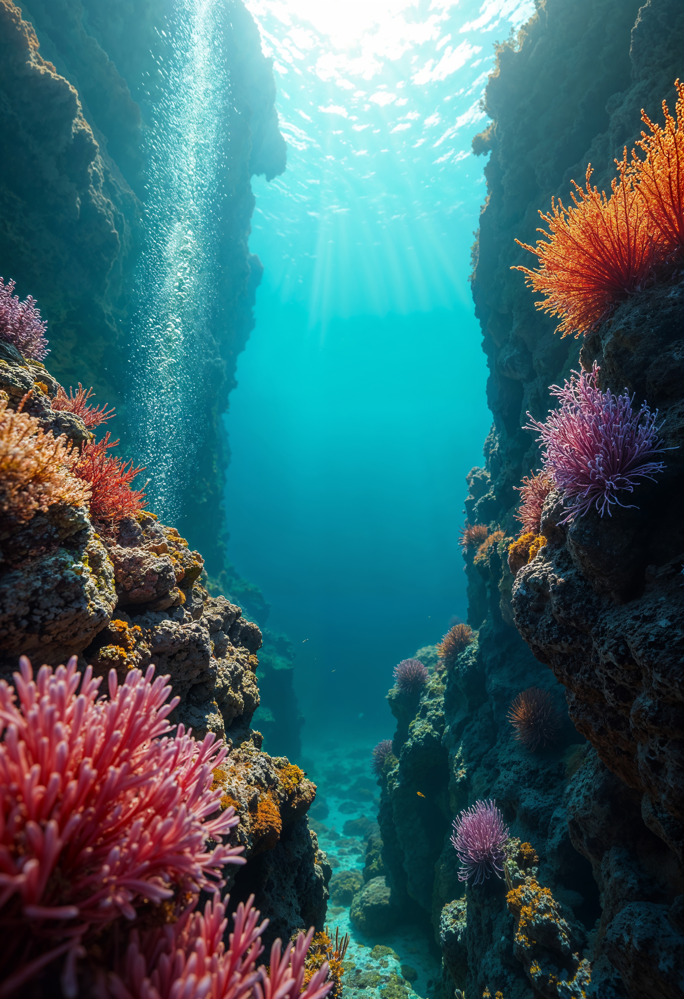
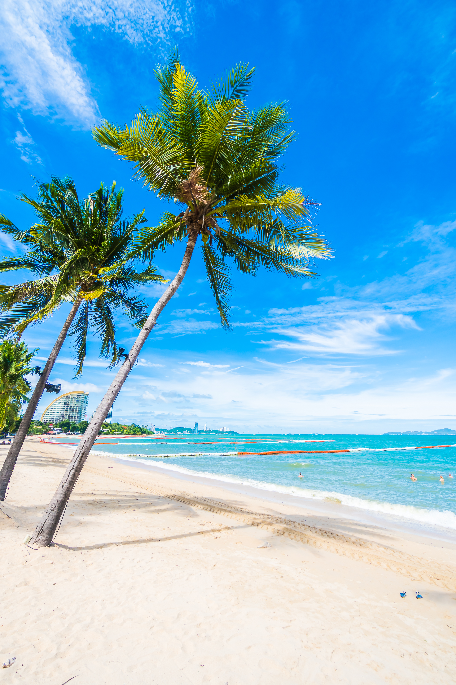

Tartarugas marinhas protegidas
Trabalhamos na proteção de ninhos, no monitoramento das praias e no resgate de tartarugas feridas por poluição ou pesca. Cada temporada representa uma vitória: mais filhotes alcançando o mar e mais animais adultos retornando com segurança ao seu habitat.
Nossas atividades:
- +350 tartarugas resgatadas e reabilitadas
- +1.200 ninhos monitorados e protegidos
- +85.000 filhotes conduzidos ao oceano
- +25 km de praias monitoradas

Recifes preservados
Nossos programas de conservação marinha restauram ecossistemas frágeis, como recifes de corais, que são berçários naturais para inúmeras espécies. Investimos em viveiros de corais, monitoramento científico e ações de turismo responsável para garantir que esses ecossistemas continuem vivos para as próximas gerações.
Nossas atividades:
- +4.000 fragmentos de corais plantados
- +75% taxa média de sobrevivência dos corais após 1 ano
- +50 ha de áreas marinhas sob manejo sustentável
- +120 espécies registradas em monitoramentos

Turistas conscientes
Cada visitante recebe orientação prática sobre como interagir de forma respeitosa com o ambiente marinho. Ao final da experiência, eles levam não apenas boas memórias, mas também novos hábitos sustentáveis que se refletem no dia a dia. Transformamos turistas em verdadeiros embaixadores do oceano.
Nossas atividades:
- +5.000 turistas capacitados como Turistas Conscientes
- +92% de adesão às boas práticas durante os passeios
- +87% relatam mudança de hábitos após a viagem
- +50 comunidades locais envolvidas em educação ambiental

Lixo retirado do mar
Realizamos mutirões de limpeza em praias e mergulhos subaquáticos, recolhendo resíduos que ameaçam a vida marinha. O material é encaminhado para reciclagem ou reutilização, gerando também oportunidades de renda para cooperativas locais.
Nossas atividades:
- +18 toneladas de resíduos removidos do mar e praias
- +65% do lixo coletado destinado à reciclagem e upcycling
- +200 mutirões de limpeza realizados
- +800 voluntários engajados
